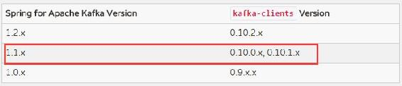
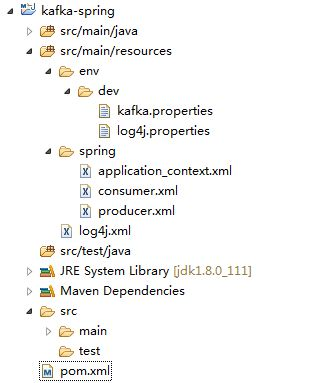

Spring与Kafka的整合有spring-kafka和spring-integration-kafka两种方式。本书我们只介绍spring-kafka这种方式。
进入Spring官方网站，在Spring支持的Projects列表中会看到有一个工程名为“SPRING KAFKA”的项目，点击该项目进入Spring与Kafka集成相关使用指南页面，在该页面会展示Spring与Kafka集成包所支持的Kafka版本，如图6-3所示。

图6-3 Spring与Kafka集成版本的对应关系
由于本书所使用的Kafka为0.10.1.1版本，因此我们选择spring-kafka为1.1.5.RELEASE版本。在该页面的右上角，会有spring-kafka版本信息以及该版本的使用指南和API。下面通过一个实例来讲解Spring与Kafka整合的具体步骤。
假设有这样一个应用场景：将用户对股票的买卖委托发送到Kafka，然后再由消费者从Kafka读取用户委托信息进行交易撮合相关操作。为了简单，在这里我们让消费者读取消息后在控制台打印日志来模拟交易撮合。
首先创建一个Maven工程，在pom.xml文件中加入Kafka以及Spring与Kafka集成的jar文件依赖配置。
<dependency>
<groupId>org.apache.kafka</groupId>
<artifactId>kafka_2.11</artifactId>
<version>0.10.1.1</version>
</dependency>
<dependency>
<groupId>org.springframework.kafka</groupId>
<artifactId>spring-kafka</artifactId>
<version>1.1.5.RELEASE</version>
</dependency>因篇幅有限，该工程与Spring相关的application_context.xml文件以及web.xml文件的配置代码不再介绍。工程的目录结构如图6-4所示。

图6-4 Spring与Kafka整合工程的目录结构
然后创建一个主题用来存储用户交易委托信息。创建该主题命令如下：
kafka-topics.sh --zookeeper server-1:2181,server-2:2181,server-3:2181 --create --topic trade-entrust --partitions 3 --replication-factor 2到这里，Spring与Kafka整合的前期工作基本完成。下面分两小节详细介绍通过spring-kafka实现生产者发送消息以及消费者消费消息的详细过程。
Spring与Kafka整合后，创建生产者的相关操作交由Spring容器来管理。因此，我们创建一个producer.xml的文件，在该文件中实例化一个生产者。spring-kafka将KafkaProducer相关的操作封装成一个KafkaTemplate对象，因此要创建一个生产者就是要完成KafkaTemplate对象的实例化。
KafkaTemplate提供了KafkaTemplate(ProducerFactory<K, V> producerFactory)和KafkaTemplate (ProducerFactory<K, V> producerFactory, boolean autoFlush)两个构造方法。其中ProducerFactory是一个定义创建生产者的接口，该接口只定义了一个Producer<K, V> createProducer()方法，该接口有一个实现类DefaultKafkaProducerFactory。由于KafkaProducer是线程安全的，而且多个线程公用一个KafkaProducer实例比每个线程各自实例化一个KafkaProducer性能要好，因此DefaultKafkaProducerFactory以单例模式实例化了一个Kafka Producer。参数autoFlush用于控制生产者发送消费的方式，当该参数为true表示是以同步形式发送。
DefaultKafkaProducerFactory有两个构造方法，即DefaultKafkaProducerFactory(Map<String, Object> configs)和DefaultKafkaProducerFactory(Map<String, Object> configs, Serializer<K> keySerializer, Serializer<V> valueSerializer)。这两个构造方法构造形参与KafkaProducer相应构造方法的参数相同，也是通过一个Map对象指定实例化生产者的相关配置信息。
KafkaTemplate还提供了一个ProducerListener接口，该接口定义了onSuccess()方法和onError()方法两个方法，分别用于在消息发送成功和失败时进行相应处理。我们定义一个SpringKafkaProducerListener类实现该接口并重写这个方法，在消息发送成功或失败时打印输出相应信息。SpringKafkaProducerListener类的具体实现代码如代码清单6-30所示。
代码清单6-30 SpringKafkaProducerListener类的具体实现代码
package com.kafka.action.chapter6.spring.producer;
import org.apache.kafka.clients.producer.RecordMetadata;
import org.springframework.kafka.support.ProducerListener;
public class SpringKafkaProducerListener implements ProducerListener<String, String> {
public void onSuccess(String topic, Integer partition, String key, String value,
RecordMetadata recordMetadata) {
System.out.println("委托成功:主题[" + topic + "],分区["+
recordMetadata.partition() + "],委托时间["+recordMetadata.timestamp()+"],委
托信息如下：");
System.out.println(value);
}
public void onError(String topic, Integer partition, String key, String value,
Exception e) {
System.out.println("消息发送失败:topic:" + topic + ",value" + value+ ",exception:"
+ e.getLocalizedMessage());
}
public boolean isInterestedInSuccess() {
return true;// 要onSuccess方法被执行，需要返回true
}
}在介绍produce.xml配置之前，我们首先创建一个kafka.properties文件，该文件用于定义实例化KafkaProducer的相关配置信息，该文件的内容如代码清单6-31所示。
代码清单6-31 kafka.properties文件的具体内容
# 连接Kafka broker相关配置
bootstrap.servers=server-1:9092,server-2:9092,server-3:9092
# 消息key序列化类
key.serializer=org.apache.kafka.common.serialization.StringSerializer
# 消息序列化类
value.serializer=org.apache.kafka.common.serialization.StringSerializer
# 默认主题，即将当调用不指定主题的send方法时消息被发送到的主题
defaultTopic=trade-entrust
# 消息发送方式：true表示以同步方式发送
autoFlush=true在producer.xml文件中加入实例化KafkaTemplate相关的配置，该文件的内容如代码清单6-32所示。
代码清单6-32 producer.xml文件的具体内容
<?xml version="1.0" encoding="UTF-8"?>
<beans xmlns="http://www.springframework.org/schema/beans"
xmlns:xsi="http://www.w3.org/2001/XMLSchema-instance"
xmlns:context="http://www.springframework.org/schema/context"
xsi:schemaLocation="http://www.springframework.org/schema/beans
http://www.springframework.org/schema/beans/spring-beans.xsd
http://www.springframework.org/schema/context
http://www.springframework.org/schema/context/spring-context.xsd">
<!-- 定义实例化KafkaProducer的参数 -->
<bean id="producerProperties" class="Java.util.HashMap">
<constructor-arg>
<map>
<entry key="bootstrap.servers" value="${bootstrap.servers}"/>
<entry key="key.serializer" value="${key.serializer}"/>
<entry key="value.serializer" value="${value.serializer}"/>
</map>
</constructor-arg>
</bean>
<!-- 实例化DefaultKafkaProducerFactory,用于根据配置创建一个KafkaProducer实例 -->
<bean id="producerFactory" class="org.springframework.kafka.core.DefaultKafka
ProducerFactory" >
<constructor-arg>
<ref bean="producerProperties"/>
</constructor-arg>
</bean>
<bean id="producerListener" class="com.kafka.action.chapter6.spring.producer. SpringKafkaProducerListener"/>
<!-- 创建kafkatemplate-->
<bean id="kafkaTemplate" class="org.springframework.kafka.core.KafkaTemplate">
<!-- 指定ProducerFactory实例 -->
<constructor-arg index="0" ref="producerFactory"/>
<!-- 同步模式 -->
<constructor-arg index="1" value="true"/>
<!-- 指定一个默认的主题 -->
<property name="defaultTopic" value="${defaultTopic}"/>
<!-- 指定一个自定义的ProducerListener -->
<property name="producerListener" ref="producerListener"/>
</bean>
</beans>在application_context.xml文件中导入producer.xml配置文件，即增加<import resource= "classpath:spring/producer.xml" />配置。
最后，我们编写一个Spring控制器，用于模拟客户端提交交易委托，控制器接受交易请求后，将消息发送到Kafka。控制器的具体实现如代码清单6-33所示。
代码清单6-33 控制器接受前端交易委托并发送到Kafka
package com.kafka.action.chapter6.spring.controller;
import Java.io.PrintWriter;
import Javax.servlet.http.HttpServletRequest;
import Javax.servlet.http.HttpServletResponse;
import net.sf.json.JSONObject;
import org.apache.commons.lang.StringUtils;
import org.apache.log4j.Logger;
import org.springframework.beans.factory.annotation.Autowired;
import org.springframework.kafka.core.KafkaTemplate;
import org.springframework.stereotype.Controller;
import org.springframework.web.bind.annotation.RequestBody;
import org.springframework.web.bind.annotation.RequestMapping;
import org.springframework.web.bind.annotation.RequestMethod;
import org.springframework.web.bind.annotation.ResponseBody;
@Controller
public class SpringKafkaController {
private static final Logger LOG = Logger.getLogger(SpringKafkaController.class);
@Autowired
private KafkaTemplate<String, String> kafkaTemplate;
@ResponseBody
@RequestMapping(value = "/trade_entrust", method = { RequestMethod.POST })
public void signIn(HttpServletRequest request, @RequestBody JSONObject params,
HttpServletResponse response) {
PrintWriter writer = null;
String rspMsg = "委托失败";
try {
writer = response.getWriter();
String entrustInfo = params.toString();
// 这里通过验证请求参数不为空来表示一笔有效的委托
if(StringUtils.isNotBlank(entrustInfo)){
kafkaTemplate.sendDefault(entrustInfo);
rspMsg = "委托成功";
}else{
rspMsg = "请求参数非法";
}
} catch (Exception e) {
rspMsg = "消息发送失败";
LOG.error(rspMsg,e);
} finally {
writer.append(rspMsg);
if (writer != null) {
writer.close();
}
}
}
}在Eclipse中运行该工程，同时通过Postman模拟用户交易委托。交易委托信息以JSON格式发送到后台。例如，定义交易委托的JSON数据如下：
{
"user_id": "1000000",
"sec_code": "601766",
"sec_price": "10.01",
"sec_name":"中国中车"
}在Postman发送请求后，Eclipse输出信息如下：
委托成功:主题[trade-entrust],分区[1],委托时间[1494633326839],委托信息如下：
{"user_id":"1000000","sec_code":"601766","sec_price":"10.01","sec_name":"中国中车"}至此，Kafka与Spring整合实现生产者发送消息的功能已介绍完成。下面介绍Kafka与Spring整合实现消费者的详细步骤。
spring-kafka是通过监听模式消费消息的。spring-kafka定义了一个消息监听者容器接口MessageListenerContainer，该接口KafkaMessageListenerContainer和ConcurrentMessageListener Container有两个实现类，分别表示单线程容器和多线程并发容器。其实，多线程并发容器是根据用户指定的并发数（concurrency）来创建多个单线程容器。之所以称为线程容器，是由于消费者线程是交由消息监听者容器来管理，然而监听者容器并不是直接管理消费者线程，而是管理消费者工厂（ConsumerFactory）。spring-kafka对消费者管理实现方式和对生产者管理实现方式相同，即每一个消费者是由消费者工厂直接管理，包括创建消费者、提交消费偏移量，因此我们只需要在配置文件中实例化一个消费者工厂，由它来创建KafkaConsumer。
在介绍消息监听者容器配置之前，我们先来看这两个监听者容器的构造方法及主要属性。并发容器的构造方法为ConcurrentMessageListenerContainer(ConsumerFactory<K, V> consumerFactory, ContainerProperties containerProperties)，单线程容器构造方法也是依赖一个ConsumerFactory对象和一个ContainerProperties对象。其中ContainerProperties类定义实例化容器的相关配置，包括消费者消费的主题、分区与消费者分配关系等。若不指定分区与消费者分配关系，多线程并发容器会根据并发数与分区数自动进行分配。并发消费监听者容器有一个重要的属性concurrency，用于指定并发数，也就是消费者线程数。
由于是监听模式，所以需要创建一个监听器。spring-kafka提供了一个MessageListener接口，客户端只需实现该接口，并覆盖该接口的onMessage(ConsumerRecord<String, String> data)方法，在该方法中实现消费者对消息的具体业务处理。在装配监听者容器时以构造器注入方式将该监听器注入到容器。
首先定义一个消费者监听器，该监听器监听到消息后将消息打印到控制台，具体实现如代码清单6-34所示。
代码清单6-34 消费者监听器的具体实现代码
package com.kafka.action.chapter6.spring.consumer;
import org.apache.kafka.clients.consumer.ConsumerRecord;
import org.springframework.kafka.listener.MessageListener;
public class SpringKafkaConsumerListener implements MessageListener<String, String> {
public void onMessage(ConsumerRecord<String, String> data) {
// 当读取到用户委托信息后，将委托信息加入到委托队列中,然后由撮合程序完成撮合,
// 这里我们只是简单地打印出委托信息
if (null != data) {
System.out.println("消费者线程:" + Thread.currentThread().getName()+ ",消息
来自Kafka,主题[" + data.topic() + "],分区["+ data.partition() + "],委托时间[" +
data.timestamp()+ "]消息内容如下：");
System.out.println(data.value());
}
}
}然后创建一个consumer.xml配置文件，用于装配消费者。本例我们创建一个Concurrent MessageListenerContainer容器，同时指定3个消费者线程，这3个消费者属于同一个消费组。一个简单的消费者装配过程，主要包括以下几部分配置。
（1）装配一个HashMap，定义实例化KafkaConsumer的配置参数。
（2）装配消费者工厂，以构造器注入方式指定消费者配置参数，消费者工厂负责消费者的创建。
（3）装配一个自定义的消息监听器，该监听器实现消费者具体业务逻辑。
（4）装配一个容器配置的Bean，以构造器注入的方式指定消费者所消费的主题，同时以属性注入的方式注入自定义的监听器。
（5）装配消息监听容器，若是多线程并发，通过属性注入的方式指定并发数，也就是消费者线程数。
在介绍consumer.xml配置文件具体内容之前，首先在Kafka.properties文件中加入装配消费者相关的资源信息，如代码清单6-35所示。
代码清单6-35 消费者的相关配置信息
# 消费组名
group.id=trade_entrust
# 是否自动提交偏移量
enable.auto.commit=true
# 自动提交偏移量的时间间隔
auto.commit.interval.ms=1000
# 线程数
concurrency=3
# 消息key反序列化类
key.deserializer=org.apache.kafka.common.serialization.StringDeserializer
# 消息反序列化类
value.deserializer=org.apache.kafka.common.serialization.StringDeserializerconsumer.xml配置文件的详细内容如代码清单6-36所示。
代码清单6-36 consumer.xml文件的详细配置信息
<?xml version="1.0" encoding="UTF-8"?>
<beans xmlns="http://www.springframework.org/schema/beans"
xmlns:xsi="http://www.w3.org/2001/XMLSchema-instance"
xmlns:context="http://www.springframework.org/schema/context"
xsi:schemaLocation="http://www.springframework.org/schema/beans
http://www.springframework.org/schema/beans/spring-beans.xsd
http://www.springframework.org/schema/context
http://www.springframework.org/schema/context/spring-context.xsd">
<!-- 1.定义实例化KafkaConsumer的参数 -->
<bean id="consumerProperties" class="Java.util.HashMap">
<constructor-arg>
<map>
<entry key="bootstrap.servers" value="${bootstrap.servers}" />
<entry key="group.id" value="${group.id}" />
<entry key="enable.auto.commit" value="${enable.auto.commit}" />
<entry key="auto.commit.interval.ms"
value="${auto.commit.interval.ms}" />
<entry key="key.deserializer" value="${key.deserializer}"/>
<entry key="value.deserializer" value="${value.deserializer}"/>
</map>
</constructor-arg>
</bean>
<!-- 2.创建consumerFactory -->
<bean id="consumerFactory"
class="org.springframework.kafka.core.DefaultKafkaConsumerFactory">
<constructor-arg>
<ref bean="consumerProperties" />
</constructor-arg>
</bean>
<!-- 3.装配消息监听器，实现消费者具体业务处理逻辑-->
<bean id="consumerListener"
class="com.kafka.action.chapter6.spring.consumer.SpringKafkaConsumerListener" />
<!-- 4.消费者容器配置信息 -->
<bean id="containerProperties"
class="org.springframework.kafka.listener.config.ContainerProperties">
<!-- 可以指定多个主题，支持正则表达式形式 -->
<constructor-arg value="${defaultTopic}" />
<property name="messageListener" ref="consumerListener" />
</bean>
<!-- 5.创建一个支持多线程的Listener容器 -->
<bean id="messageListenerContainer"
class="org.springframework.kafka.listener.ConcurrentMessageListenerContainer"
init-method="doStart">
<constructor-arg ref="consumerFactory" />
<constructor-arg ref="containerProperties" />
<!-- 指定线程数 -->
<property name="concurrency" value="${concurrency}"></property>
</bean>
</beans>至此，通过Spring管理消费者相关配置已完成。现在启动Eclipse运行该工程，同样通过Postman发送四条模拟股票买入委托的消息。Eclipse控制台输出信息如下：
消费者线程:messageListenerContainer-0-C-1,消息来自Kafka,主题[trade-entrust],分区[0],委托时间[1494679846883]消息内容如下：
{"user_id":"1000000","sec_code":"601766","sec_price":"10.1","sec_name":"中国中车"}
消费者线程:messageListenerContainer-2-C-1,消息来自Kafka,主题[trade-entrust],分区[2],委托时间[1494679857031]消息内容如下：
{"user_id":"1000000","sec_code":"601766","sec_price":"10.5","sec_name":"中国中车"}
消费者线程:messageListenerContainer-1-C-1,消息来自Kafka,主题[trade-entrust],分区[1],委托时间[1494679869406]消息内容如下：
{"user_id":"1000000","sec_code":"601766","sec_price":"11.0","sec_name":"中国中车"}
消费者线程:messageListenerContainer-0-C-1,消息来自Kafka,主题[trade-entrust],分区[0],委托时间[1494679873753]消息内容如下：
{"user_id":"1000000","sec_code":"601766","sec_price":"11.3","sec_name":"中国中车"}由Eclipse控制台输出的信息可知：3个分区3个消费者，分区与消费者线程是以轮询的分配策略进行分配，每条消息被其中一个消费者消费。Spring与Kafka整合应用就简单介绍至此，更多的应用请读者查阅Spring官方网站进行深入了解。